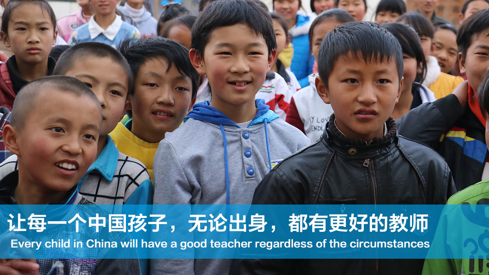

Focus on education and nonprofit-organization,
Enjoy data-analysing and stroytelling.
Organic Education Program

The Organic Education Program unites teachers from both local schools and Teach for China, as well as local students, to design a creative framework of courses ranging from art to natural science. The program comprises two parts: the first part is developing the coursework during summer and winter camps; the second part is to implement the coursework in regular school curriculum during spring and fall semesters. Guidebooks will be produced from part one as the basis for implementation. A special team cooperating with Harvard SEED Lab dedicated to data collection and analysis will evaluate the effectiveness of these courses and teachers’ performance. The program will last three years, and will continue to improve existing curriculum and to design new ones through this process. The local government and the department of education will promote these courses once they become mature enough in three years. OEP is spornsored by Chenyidan Charity Foundation and various donors. Click the 'Get it' to download the impact report and autograph paper. If you're willing to donate the program, please connact us with OEP@fellow.tfchina.org or follow the offical wechat account: Nande_yijian.